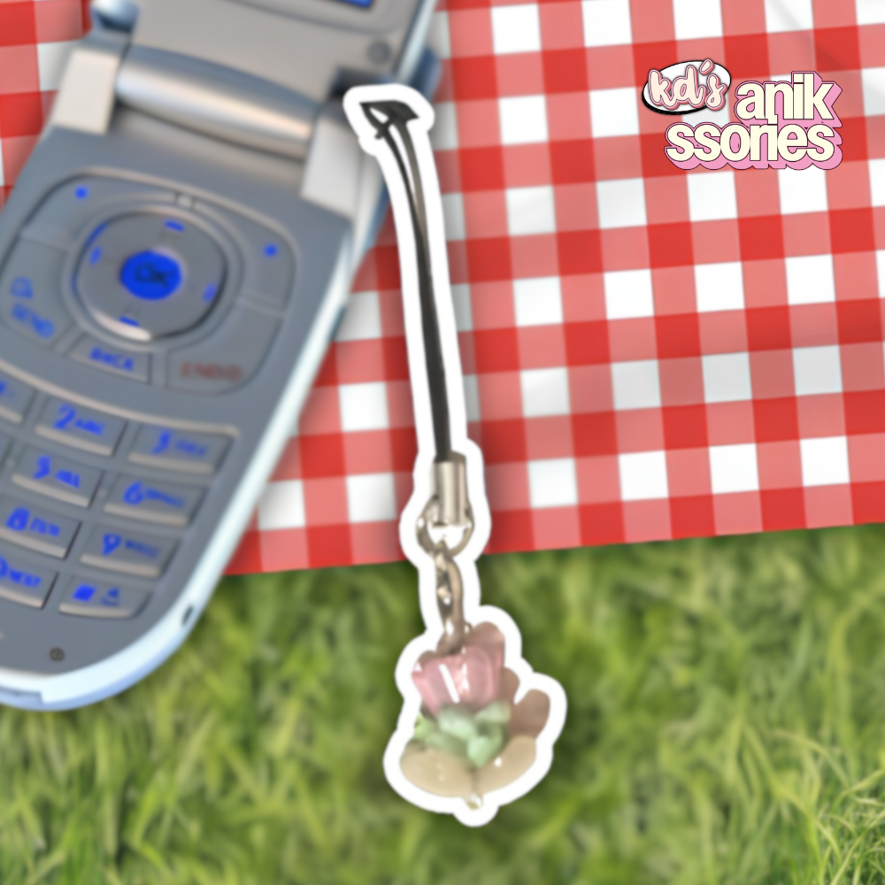
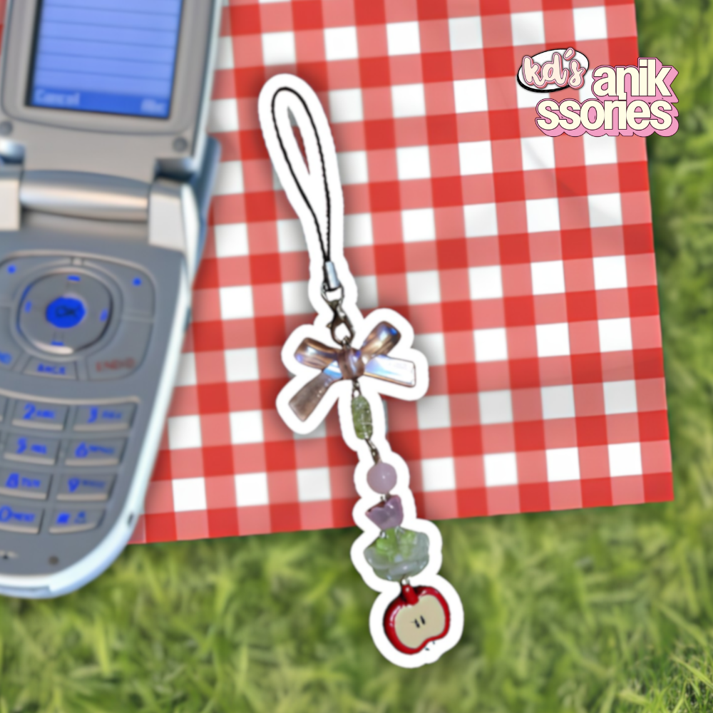

KD’s anikssories
Happiness starts with anikssories.
Jhianne Kaydee Redulla
Welcome to KD’s anikssories! I’m Kaydee, the founder of this shop.
I created this shop mainly because I enjoy putting anik-aniks on my things. Putting and creating designs
for anikssories is my secret to happiness,
so I hope that every piece will let you shine and bring
happiness wherever you go!

My Products
Cat Wondering Button Pin Badge
Php 15
This product features a cat wondering about something, with the background showing a vibrant,
cutesy vibe to make the button pin look like a cute anik-anik.
Size: 1.25 inches
Type: Glossy

Orange Cat Button Pin Badge
Php 15
The product showcases how cute orenj cats are (what we usually call orange cats here).
As an orenj cat lover, let’s appreciate and show how much we love orenj cats!
Size: 1.25 inches
Type: Glossy

BTG (been that girl) Button Pin Badge
Php 15
“I been that girl”
This product features a lyric I got from the song BTG from KiiiKiii.
You’re always that girl and no one can change it!
Size: 1.25 inches
Type: Glossy

SPH Sticker Set
Php 30
This product is perfect for decorating your journals, diaries, planners, notebooks, laptop, and tumbler.
Each design comes from the title of a K-pop song, making it perfect for someone who enjoys K-pop.
Product Details:
- 3 pieces
- Stickers are cut per piece
- Matte finish
- Sizes are approximately 1 inch or 1.5 inches (depending on the design, so sizes may vary)

Lotus Ribbon Phone Charm
Php 40
This phone charm features a ribbon bead, a four-leaf clover bead, a red apple bead, round beads,
and flower beads to create a lotus. The phone charm is inspired by one of my favorite Chinese
series that I watched, which served as my “souvenir” from it.
Length: 4.5 inches

Lotus Phone Charm
Php 25
The phone charm showcases a pieced lotus flower created with round and flower beads. This is perfect
for those who want to add charm on their phone while keeping it minimal.
Length: 2 inches
